2
▲3
▶
2
▲3
▶
史上最高傑作と称賛された神ゲー『 ゼルダの伝説 時のオカリナ 』#3
キヨ。 · 648,371再生 · 公開 11/20
2
▲3
▶
キヨ。 · 648,371再生 · 公開 11/20
 4
▼1
▶
4
▼1
▶
日常組 · 553,387再生 · 公開 11/20
 6
▲1
▶
6
▲1
▶
ドズル社 · 339,054再生 · 公開 11/20
 8
▲5
▶
8
▲5
▶
ハヤトの野望 · 266,667再生 · 公開 11/20
 10
初登場
▶
10
初登場
▶
ブロスタ公式 · 640,286再生 · 公開 11/20
 12
初登場
▶
12
初登場
▶
ゼンレスゾーンゼロ-ZZZ-公式 · 314,795再生 · 公開 11/20
 14
初登場
▶
14
初登場
▶
Pekora Ch. 兎田ぺこら · 413,689再生 · 公開 11/20
 16
▲1
▶
16
▲1
▶
今日ポケch. · 238,228再生 · 公開 11/20
 18
初登場
▶
18
初登場
▶
Miko Ch. さくらみこ · 855,240再生 · 公開 11/21
 20
▼5
▶
20
▼5
▶
SHAKAch · 407,777再生 · 公開 11/20
 22
▲5
▶
22
▲5
▶
KUNの50人クラフト · 147,633再生 · 公開 11/20
 23
▼1
▶
23
▼1
▶
1theK Originals - 원더케이 오리지널 · 634,141再生 · 公開 11/20
 24
初登場
▶
24
初登場
▶
葉ちゅべ · 152,025再生 · 公開 11/20
 26
▼15
▶
26
▼15
▶
たいじ/たいちゃんねる · 359,160再生 · 公開 11/20
 27
▼17
▶
27
▼17
▶
JO1 · 65,968再生 · 公開 11/20
 28
▼7
▶
28
▼7
▶
カラフルピーチ · 253,759再生 · 公開 11/20
 30
▼21
▶
30
▼21
▶
mellow-fan【公式】 · 748,696再生 · 公開 11/19
 31
初登場
▶
31
初登場
▶
Mili · 1,100,571再生 · 公開 11/19
 32
初登場
▶
32
初登場
▶
ブラックナイト山田 · 186,498再生 · 公開 11/20
 34
初登場
▶
34
初登場
▶
ジャモジャムのゲーム実況!（jamojam） · 171,120再生 · 公開 11/20
 35
▼19
▶
35
▼19
▶
TOMORROW X TOGETHER OFFICIAL · 4,971,850再生 · 公開 11/19
 36
初登場
▶
36
初登場
▶
ローレン・イロアス / Lauren Iroas【にじさんじ】 · 271,877再生 · 公開 11/21
 37
初登場
▶
37
初登場
▶
GADORO · 128,714再生 · 公開 11/20
 38
▼13
▶
38
▼13
▶
マエスケ · 266,675再生 · 公開 11/20
 39
▼3
▶
39
▼3
▶
優里ちゃんねる【公式】 · 80,118再生 · 公開 11/20
 40
▲9
▶
40
▲9
▶
プレイヤーキル大好きプレイヤー · 249,003再生 · 公開 11/20
 42
▼7
▶
42
▼7
▶
カワノKawano · 312,337再生 · 公開 11/20
 43
初登場
▶
43
初登場
▶
煮ル果実 / NILFRUITS · 63,439再生 · 公開 11/20
 44
初登場
▶
44
初登場
▶
Sopia Ch. 宙科そぴあ ‐ アソビ★まわり隊! · 288,042再生 · 公開 11/20
 45
初登場
▶
45
初登場
▶
佐藤ちなみに · 31,628再生 · 公開 11/20
 46
初登場
▶
46
初登場
▶
ESCL Official · 134,565再生 · 公開 11/20
 48
初登場
▶
48
初登場
▶
凡骨突撃部隊 · 79,732再生 · 公開 11/20
 50
初登場
▶
50
初登場
▶
ポケモンソルジャー【ポケソル】 · 111,638再生 · 公開 11/20
 1
初登場
▶
1
初登場
▶
Alan Walker · 290,536再生 · 公開 11/20
 3
▼2
▶
3
▼2
▶
BIGBANG - Topic · 98,222再生 · 公開 11/20
 5
初登場
▶
5
初登場
▶
HANA official · 315,097再生 · 公開 11/20
 7
初登場
▶
7
初登場
▶
3SKM · 219,219再生 · 公開 11/20
 9
▼5
▶
9
▼5
▶
JYP Entertainment · 3,118,479再生 · 公開 11/20
 11
初登場
▶
11
初登場
▶
THE FIRST TAKE · 231,189再生 · 公開 11/20
 13
初登場
▶
13
初登場
▶
緋八マナ / Hibachi Mana【にじさんじ】 · 75,348再生 · 公開 11/21
 15
▼9
▶
15
▼9
▶
加賀美 ハヤト/Hayato Kagami · 734,679再生 · 公開 11/19
 17
初登場
▶
17
初登場
▶
Storm Labels Official · 64,935再生 · 公開 11/20
 19
初登場
▶
19
初登場
▶
RADWIMPS · 113,499再生 · 公開 11/20
 21
初登場
▶
21
初登場
▶
supercell - Topic · 24,194再生 · 公開 11/21
 25
初登場
▶
25
初登場
▶
桑田佳祐 · 38,224再生 · 公開 11/20
 29
▼17
▶
29
▼17
▶
超特急 · 191,735再生 · 公開 11/19
 33
初登場
▶
33
初登場
▶
HYBE LABELS · 353,118再生 · 公開 11/20
 41
▼17
▶
41
▼17
▶
THEBLACKLABEL · 5,155,333再生 · 公開 11/20
 47
▼19
▶
47
▼19
▶
&TEAM · 62,962再生 · 公開 11/20
 49
初登場
▶
49
初登場
▶
THA BLUE HERB RECORDINGS · 95,710再生 · 公開 11/20
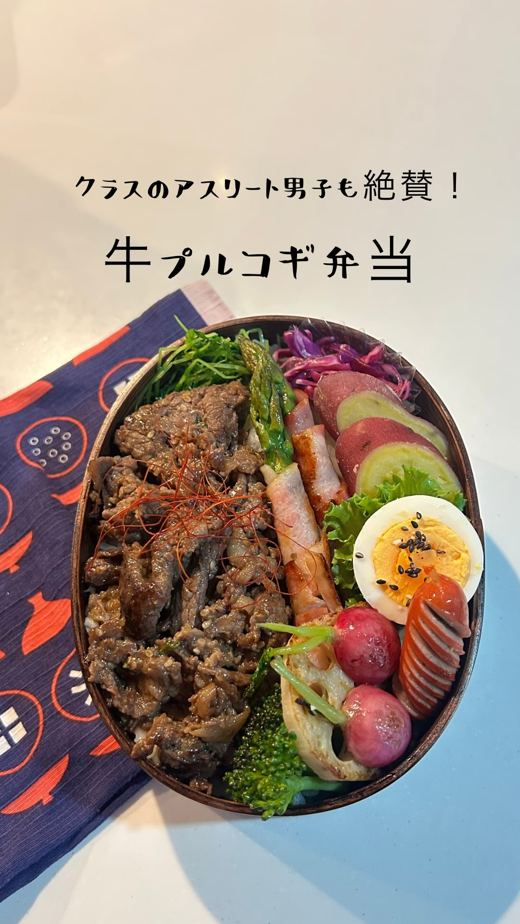
550万回Yahoo!ニュース · 19 Nov · @obento_mina22 ♥62,032
 540万回
540万回
ねとらぼ · 19 Nov · @alittleandroid ♥204,690
Yahoo!ニュース · 20 Nov · @macyrschmitt ♥179,896
ニコニコニュース · 20 Nov · Instagram
Yahoo!ニュース · 20 Nov
 230万回
230万回
PR TIMES · 19 Nov
 119万回
NEW
119万回
NEW
Excite エキサイト · 20 Nov
 115万回
115万回
Excite エキサイト · 19 Nov
 100万回
NEW
100万回
NEW
PR TIMES · 20 Nov · @ayankiii_rns ♥9,652
週刊女性PRIME · 20 Nov
ライブドアニュース · 19 Nov
Excite エキサイト · 19 Nov
ライブドアニュース · 20 Nov
Excite エキサイト · 19 Nov
ライブドアニュース · 19 Nov
ヨムーノ · 20 Nov
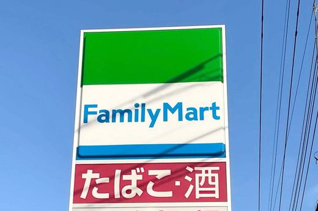
NEWYahoo!ニュース · 20 Nov
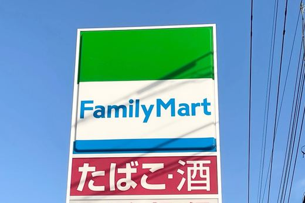
NEWBuzzFeed · 20 Nov
めざましmedia · 20 Nov
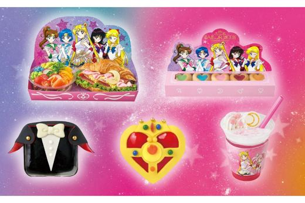
NEW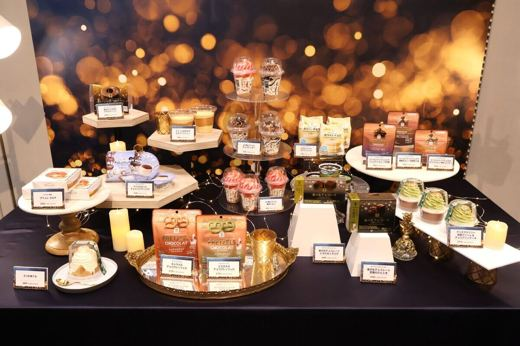
NEWマイナビニュース · 20 Nov
au Webポータル · 20 Nov
LIMO | くらしとお金の経済メディア · 20 Nov
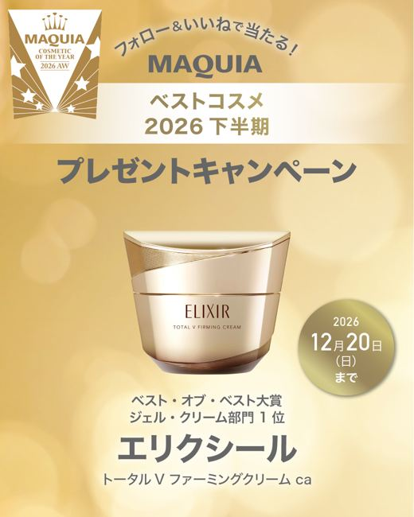
NEWMAQUIA · 20 Nov · @maquia.magazine ♥1,680
美的.com · 20 Nov · @bitekicom ♥2,910
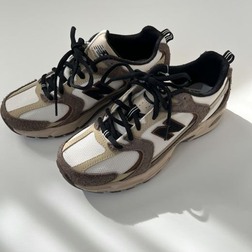
NEWマイナビウーマン · 20 Nov
LIMO | くらしとお金の経済メディア · 19 Nov
ヨムーノ · 20 Nov
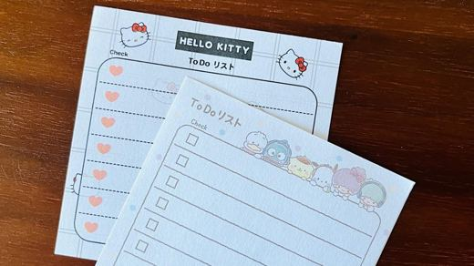
NEWYahoo!ニュース · 20 Nov
Excite エキサイト · 20 Nov
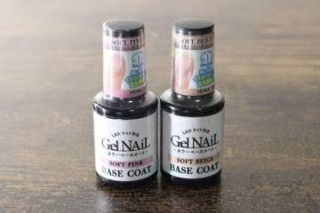
NEW千葉テレビ放送株式会社 · 20 Nov
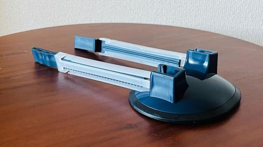
NEWYahoo!ニュース · 19 Nov

Yahoo!ニュース · 19 Nov
株式会社くりこのプレスリリース ふわふわ生地にあんやクリームを詰め、ちいかわ型に焼き上げた「ちいかわ焼き」。冬季限定のお味3種、
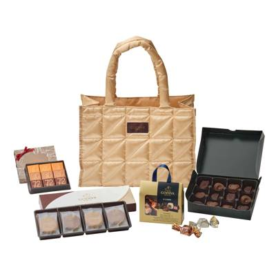
11/20 13:00 🗼 東京ゴディバ ジャパン株式会社のプレスリリース ～2027年1月1日（金）より、順次数量限定販売～ ゴディバ ジャパン株式会社（東京
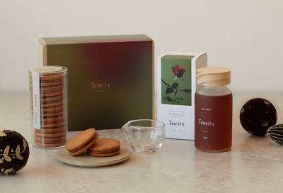
11/20 11:00 🗼 東京水谷養蜂園株式会社のプレスリリース 新しいはちみつのカタチを提案する「Tamitu（タミツ）」は、2026年11月26日(木)よ
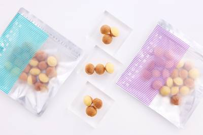
11/20 10:00 🗼 東京～あの日食べた“あの頃の味”にバニラの香りをPLUSした限定スイーツ～ 明治28年創業の菓子専門商社・株式会社丸井スズキが展開す
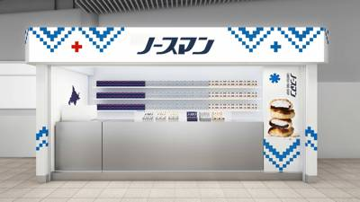
11/20 10:00 🗼 東京北海道コンフェクトグループ株式会社のプレスリリース 累計販売1,000万個を突破した北海道発の大ヒット銘菓「生ノースマン」などを
東京カレンダー株式会社のプレスリリース 11月20日(金)発売の『東京カレンダー』2027年1月号（発行：東京カレンダー株式会社
株式会社GENDA GiGO Entertainmentのプレスリリース 開催期間：2026年12月5日(土)～2027年1月3
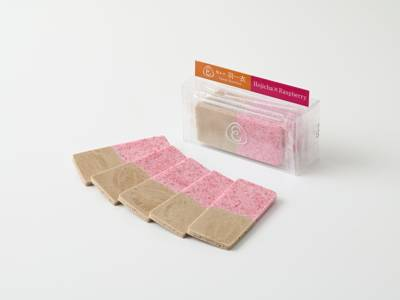
11/20 20:00 ❓ 不明株式会社榮太樓總本鋪のプレスリリース 株式会社榮太樓總本鋪(本社：東京都中央区日本橋、代表取締役社長：細田 将己、以下「榮太樓總
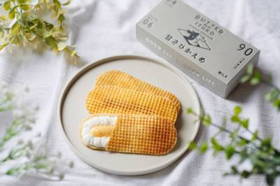
11/20 18:42 ❓ 不明株式会社GOODNEWSのプレスリリース 2026年11月23日（月・祝）より発売 バターのいとこ 甘さひかえめ 「バターのいと
株式会社八恵堂のプレスリリース 博多の和キムチ専門店を運営する株式会社八恵堂(本社：福岡県福岡市)は、2027年に誕生55周年を
キングレコード株式会社のプレスリリース ＜「EVIL LINE RECORDS CHOCOLATE COLLECTION 202
株式会社ヤガイのプレスリリース カルパスやジャーキーなどの食肉加工品の製造・販売を手掛ける株式会社ヤガイ（本社：山形県山形市、代
株式会社ヤガイのプレスリリース カルパスやジャーキーなどの食肉加工品の製造・販売を手掛ける株式会社ヤガイ（本社：山形県山形市、代
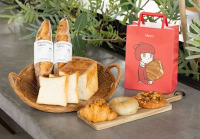
11/20 16:30 🚄 群馬株式会社Merciのプレスリリース 〜12月5日（土）発売！現代アーティスト・橋爪悠也氏との限定コラボショッパーを無料配布＆12
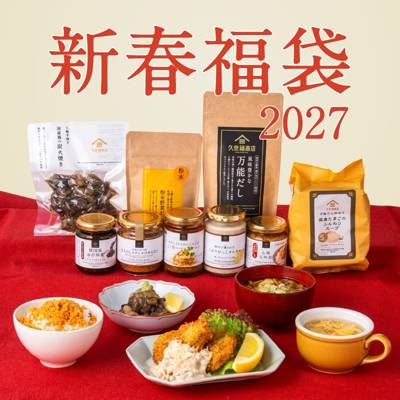
11/20 16:00 🌐 全国株式会社サンクゼールのプレスリリース 店舗予約特典をご用意。お弁当箱もすっきり入る、2WAY仕様の久世福商店オリジナル保冷ランチ
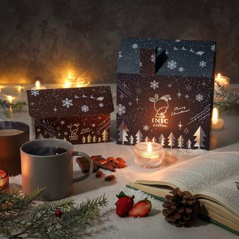
11/20 15:55 🚄 愛知パウダーフーズフォレスト株式会社のプレスリリース 毎年好評のINICのクリスマス企画。クリスマスまでの毎日の楽しみにも、大切な人
２０２６年１１月２０日（金）全店発売 ミニストップは、店内で淹れたてのホットコーヒーをリニューアルし、２０２６年１１月２０日（金
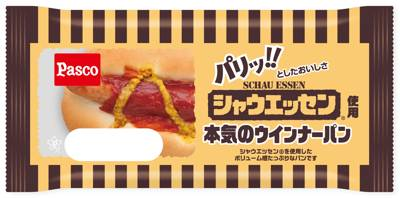
11/20 15:00 ❓ 不明敷島製パン株式会社のプレスリリース 敷島製パン株式会社（Pasco）は、日本ハム株式会社『シャウエッセン®』とのコラボ商品「本気
ＵＨＡ味覚糖株式会社のプレスリリース UHA味覚糖株式会社（本社：大阪市中央区、代表取締役：山田泰正）は、女性の美容と健康を応
株式会社東武ストアのプレスリリース 春日部駅東口徒歩1分！駅前で必要なものが揃う充実な品揃え 東武ストア春日部店外観（イメージ）
ファーストキッチン株式会社のプレスリリース 新商品の先行販売やオリジナルエコバッグを数量限定で配布！ ウェンディーズ・ジャパン株
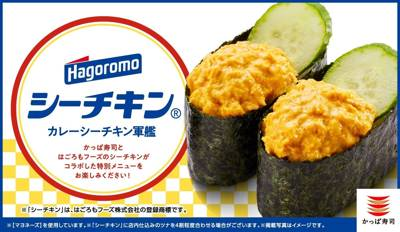
11/20 14:00 🌐 全国カッパ・クリエイト株式会社のプレスリリース ２０２６年１１月２６日（木）より、かっぱ寿司全店にて販売開始 コロワイドグループの
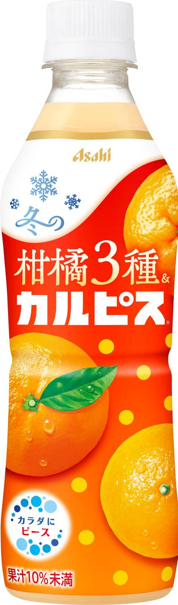
11/20 14:00 ❓ 不明アサヒ飲料株式会社のプレスリリース マンダリンオレンジ・せとか・完熟ポンカンの3種の柑橘を合わせた「カルピス」 アサヒ飲料株式
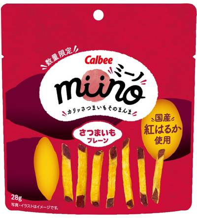
11/20 14:00 🌐 全国カルビー株式会社のプレスリリース 2026年11月30日（月）から全国のコンビニエンスストアで数量限定発売 カルビー株式会社(本
自社店舗および広島・北海道・岡山・福岡・京都の各地域の実店舗、小売店にて地域限定販売開始 ライフスタイルカンパニー株式会社（所在
Daigasグループのプレスリリース Daigasグループのクリエテ関西が、あまから手帖2026年12月号「京都の和食。」を1
一般社団法人埼玉県物産観光協会のプレスリリース 一般社団法人埼玉県物産観光協会（会長：朝霧重治）は、埼玉県内の事業者により1年の
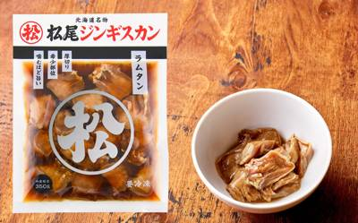
11/20 12:57 🚄 北海道株式会社マツオのプレスリリース 創業70周年を迎えた株式会社マツオが提案する羊肉の新たなおいしさ。レストランで提供してきた厚切り
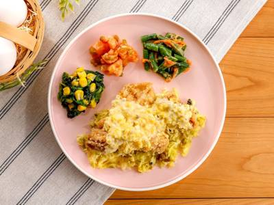
11/20 12:35 🚄 兵庫ナッシュ株式会社のプレスリリース 〜飽きずに・美味しく・楽しく健康的な食事を習慣化。新商品も続々と登場〜 当社は「毎日の生活を“
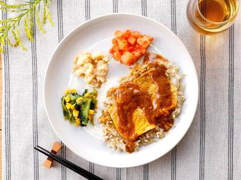
11/20 12:33 🚄 兵庫ナッシュ株式会社のプレスリリース 〜飽きずに・美味しく・楽しく健康的な食事を習慣化。新商品も続々と登場〜 当社は「毎日の生活を“
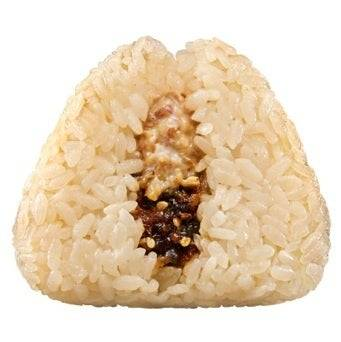
11/20 12:00 🌐 全国株式会社サンクゼールのプレスリリース 株式会社サンクゼール（本社：長野県飯綱町/代表取締役社長：久世良太）は、株式会社ファミリ
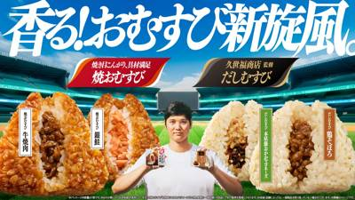
11/20 12:00 🌐 全国株式会社ファミリーマートのプレスリリース 株式会社ファミリーマート（本社：東京都港区、代表取締役社長：小谷建夫）は、2026年9
米屋株式会社のプレスリリース 千葉県のFMラジオ局BAYFMと、なごみの米屋のコラボレーション商品「BAY-B YOKAN（ベイ
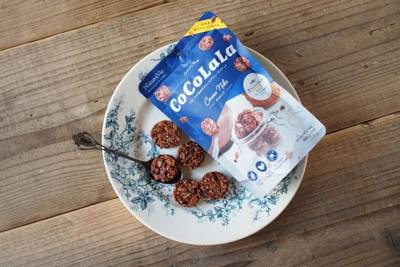
11/20 11:45 ❓ 不明株式会社尾賀亀のプレスリリース ～尾賀亀オリジナルブランドNaturaVie（ナチュラヴィ）～ 株式会社尾賀亀（本社：滋賀県近
株式会社緑寿庵清水のプレスリリース 各店にてご予約承り中～御歳暮や御年賀、冬を彩る贈りものに～昨年は大好評により瞬く間に完売を迎
株式会社 明治のプレスリリース 価格改定および内容量変更のお知らせ 株式会社 明治（代表取締役社長：八尾 文二郎）は、2027
日本ケンタッキー・フライド・チキン株式会社のプレスリリース 日本ケンタッキー・フライド・チキン株式会社(社長：名嶋 篤史、本社
株式会社 資生堂パーラーのプレスリリース 公式サイト：https://parlour.shiseido.co.jp/ 「資生堂パ
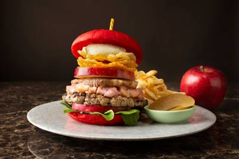
11/20 11:00 🚄 大阪森トラスト・ホテルズ＆リゾーツ株式会社のプレスリリース りんごを思わせる赤いバンズと、アップルパイの風味をグルメバーガーに 本リ
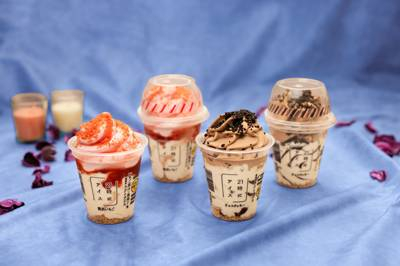
11/20 11:00 🌐 全国株式会社セブン‐イレブン・ジャパンのプレスリリース ～ライフスタイルにあわせて楽しめる、「夜のおうち時間を充実させる」商品を順次
森永乳業株式会社のプレスリリース いつもの健康を、いつもの食品で生活者の健康を支えるプロジェクト「“食べる”をもっと健やかに」
株式会社リクルートのプレスリリース 『北海道じゃらん』2026年12月号は11/20発売 株式会社リクルート（本社：東京都千代田
ジェイ・ワークス株式会社のプレスリリース 柚子や抹茶、金平糖など和素材を重ねた縁起物「迎春パレショコラ」をはじめ、帰省の手土産や
株式会社山本山のプレスリリース 元禄三年（1690年）創業、お茶と海苔の株式会社山本山（本社：東京都中央区、代表取締役：山本奈
株式会社TWOのプレスリリース 2つの素材のかけ合わせや食感を楽しむ、新感覚のご褒美スイーツが登場 株式会社TWO（本社：東京
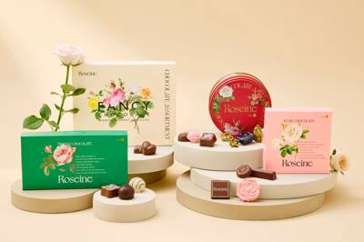
11/20 10:00 ❓ 不明株式会社メリーチョコレートカムパニーのプレスリリース ～2026年12月23日（水）より予約開始～ チョコレートをはじめとする贈
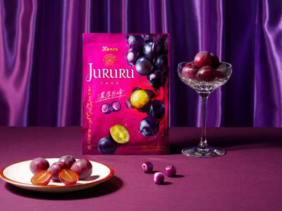
11/20 10:00 ❓ 不明カンロ株式会社のプレスリリース ～巨峰の果汁を使用した独自配合のジュレによる贅沢な味わいの一粒～ カンロ飴やピュレグミなどでお
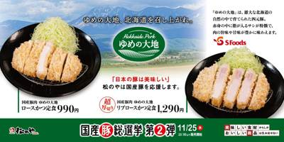
11/20 10:00 ❓ 不明株式会社松屋フーズホールディングスのプレスリリース 松のやが日本のブランド豚を応援する「国産豚総選挙」！ 北海道の恵みが育んだ「
株式会社オンワードホールディングスのプレスリリース ～ココイチオリジナルキャラクター「NeCo壱」のグッズが初登場～ 株式会
株式会社ホスピタリティオペレーションズのプレスリリース ～麻辣だれの奥深い味わいと、シャキシャキの白髪ねぎがアクセントな一品～
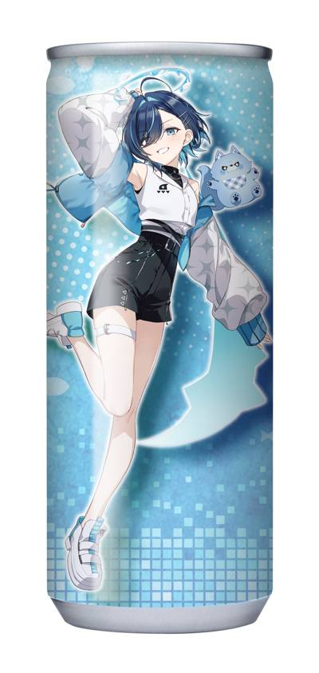
11/20 10:00 ❓ 不明株式会社JIDAI Xのプレスリリース ASAP SYNERGY × 鮫升コモリ 描き下ろしイラスト入りコラボ缶、全2種で202
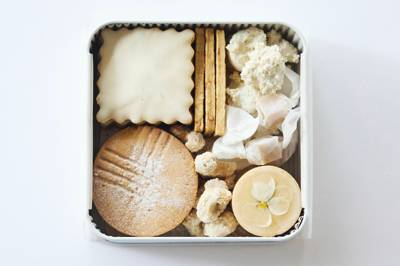
11/20 10:00 🚄 山梨株式会社ジュンのプレスリリース 冬のクローゼットを開けるように、好きなものだけを集めた白のコレクション BIOTOPが展開するブ
株式会社ウエニ貿易のプレスリリース ※1 MCI,WPC,EGG,SOY 株式会社ウエニ貿易（本社：東京都台東区、代表取締役社長
株式会社コルマール堂のプレスリリース ジュエルケーキのMythiQue（ミティーク）、12月1日 エスパル仙台 東館2Fに常設店
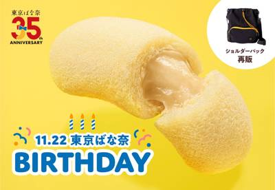
11/20 10:00 ❓ 不明株式会社グレープストーンのプレスリリース 「東京ばにゃ奈」がシールにもブロマイドにも！4種デザインのeプリントが見逃せない 株式
株式会社 宇治田原製茶場のプレスリリース 「京玄米茶 上ル入ル【大福茶】」を11月24日に発売。アンケート調査では、由来を知ると
～「失敗しない煮魚」が作れる無添加の秘伝の煮汁、 レンジで磯の香りが立つサザエ御飯、そして金目鯛×マヨの新感覚ディップ。 ご家庭
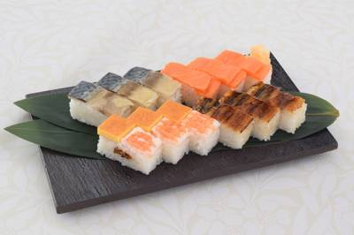
11/20 09:00 🌐 全国株式会社梅の花グループのプレスリリース 2027年1月1日(祝)～2027年1月5日(火)の期間限定 現在、全国の百貨店・ＳＣ・
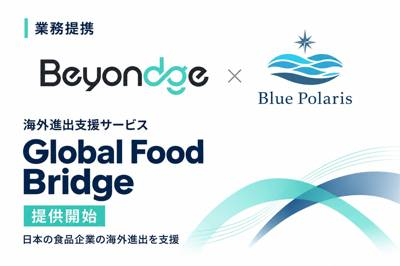
11/20 09:00 ❓ 不明株式会社Blue Polarisのプレスリリース 各国・各州の規制に対応した商品開発と輸出入の仕組みづくりから、事業計画・資金調
 11/20 08:47
🚄 神戸
11/20 08:47
🚄 神戸
株式会社コズミックホールディングスのプレスリリース 株式会社イートウイング（本社:東京都港区西新橋、代表取締役 時松 祐⼆）が運
有限会社アイズのプレスリリース 餃子3種を含む全8品が90分食べ放題で税込2,508円！同伴者1名も無料の来店アンバサダーを11
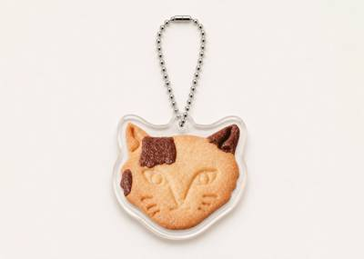
11/20 19:01 🗼 新宿有限会社コンテンポラリープランニングセンターのプレスリリース 「“神様のいたずら”ネコクッキー缶」1点ご購入につき1点プレゼント
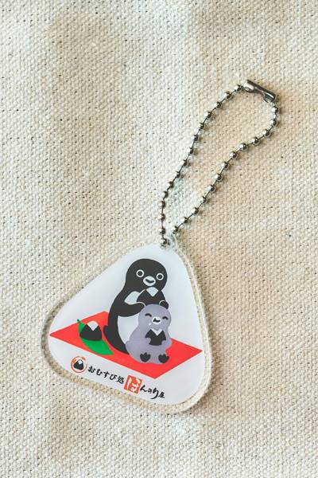
11/20 14:00 🗼 東京株式会社JR東日本クロスステーションのプレスリリース ～11月24日(火)から「おむすび処 ほんのり屋」全店舗で実施～ 株式会
株式会社Genki Global Dining Conceptsのプレスリリース 〜魚べい・元気寿司にて11月24日(火)より開
株式会社ガーデンのプレスリリース ～「壱角家」118店舗でコラボ限定のオリジナルラーメン＆ドリンク、一部店舗で限定メニュー＆グッ
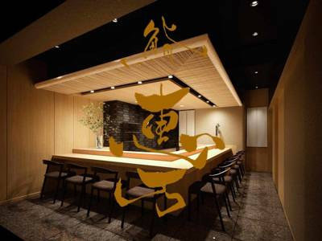
11/20 11:50 🗼 東京株式会社CRAFTED JAPANのプレスリリース ２０２６年１２月１日～２０２７年１月３１日まで期間限定でご提供！ 2024年
株式会社ドムドムフードサービスのプレスリリース 小平にドムドムが帰ってきます！恒例のオープン記念「でか甘辛チキン」も販売！ 株式
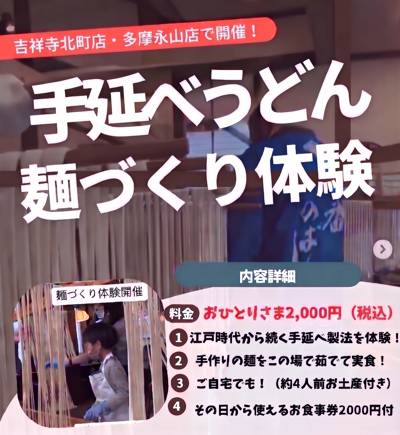
11/20 10:00 🗼 東京株式会社サガミホールディングスのプレスリリース ～「味の民芸」で延ばしてつくる“手延べ製法”の「麺づくり体験」～ 株式会社サガ
ワタミ株式会社のプレスリリース ※1 当社試算（2026年11月時点）。「まごころ手鞠」の献立の一例（3食分）を自炊した場合の費
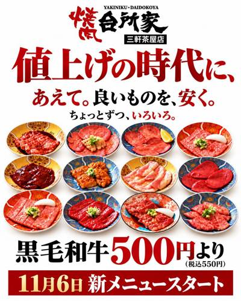
11/20 09:30 🗼 三軒茶屋株式会社燦のプレスリリース 『孤独のグルメ』で紹介された老舗回転寿司「すし台所家 三軒茶屋店」の 姉妹店ならではの発想。塩タンも
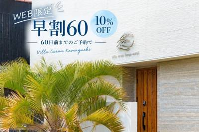
11/20 19:01 ❓ 不明株式会社ぷらどのプレスリリース 春休みの旅行先はもう決まりましたか？ 2月から3月にかけては、卒業旅行や春休みの旅行が増えるシー
株式会社リエイのプレスリリース 金沢発の冷凍ピザブランド「モリナポ」（製造・販売 株式会社森山ナポリ：石川県金沢市三池町 代表取
JA全農の産直通販JAタウンのプレスリリース ～「国消国産 お客様送料負担なしキャンペーン」開催中！～ ＪＡ全農が運営する産地
全国農業協同組合連合会のプレスリリース ＪＡ全農が運営する産地直送通販サイトＪＡタウンのショップ「おきなわちゅら島」は、令和８
JA全農の産直通販JAタウンのプレスリリース ＪＡ全農が運営する産地直送通販サイトＪＡタウンのショップ「おきなわちゅら島」は、
株式会社ランクアップのプレスリリース ～暖冬予報の今冬こそ「隠れ冷え」に注意。薬膳に特化した管理栄養士・植木もも子さんによる温活
静鉄プロパティマネジメント株式会社のプレスリリース 県内初出店も！注目の４店舗が続々オープン！ 静鉄プロパティマネジメント株式
株式会社モンテローザのプレスリリース 2026年11月23日（月・祝）・24日（火）の２日間は料理もドリンクも店内でお召し上がり
株式会社GENDA GiGO Entertainmentのプレスリリース ジョージと黄色い帽子のおじさんの限定景品が多数登場！ジ
株式会社ガーデンのプレスリリース ～全国22店舗でコラボ限定のオリジナルうどん＆ドリンク、一部店舗でグッズを展開！2026年11
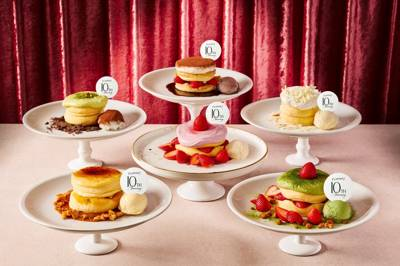
11/20 11:40 ❓ 不明株式会社ベイクルーズのプレスリリース 株式会社ベイクルーズ（本社：東京都渋谷区、取締役社長：古峯正佳）が運営するブランチカフェ「
株式会社ジョイフルのプレスリリース ファミリーレストランチェーン「ジョイフル」を展開する株式会社ジョイフル（本社：大分県大分市
ヨシケイ開発株式会社のプレスリリース つくる人から笑顔に。をテーマに全国でミールキット宅配サービスを提供するヨシケイグループ（
株式会社レインズインターナショナルのプレスリリース 2026年11月26日（木）から11月30日（月）まで コロワイドグループの
株式会社ベイエフエムのプレスリリース 老舗和菓子店 「なごみの米屋(よねや)」 とBAYFMのコラボ商品「BAY-B YOKAN
SRSホールディングス株式会社のプレスリリース さらに最大5％割引クーポンを配布 SRSホールディングス株式会社（本社：大阪府大
株式会社ゼンショーホールディングスのプレスリリース 株式会社すき家（代表取締役社長：笹川 直樹 本社：東京都港区）が全国に展開す
くら寿司株式会社のプレスリリース 回転寿司業界初！ 登録者数230万人超のファミリー向け人気YouTubeチャンネルとタイアップ
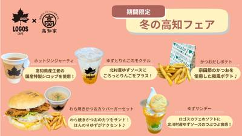
11/20 11:00 🚄 京都株式会社ロゴスコーポレーションのプレスリリース 〜⾼知県との連携協定による期間限定特別メニュー！ロゴス×⾼知家〜 アウトドアブラ
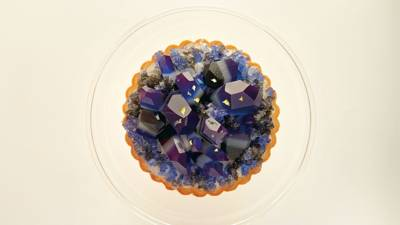
11/20 09:28 ❓ 不明メルティングポットハラペコラボ株式会社のプレスリリース 群青の琥珀糖に金箔がきらめく、12月の誕生石をモチーフにしたアイスケーキ
アークランドサービスホールディングス株式会社のプレスリリース 濃厚担々ダレに花椒が香る爽快なシビレ。「花椒からあげの鉄板担々定食
株式会社ORBのプレスリリース 「週刊少年サンデー」（小学館）で連載中、山田鐘人（原作）・アベツカサ（作画）による大人気漫画を原
ビーテック株式会社が運営するメッセージ入りお菓子＆ギフト専門店「おうさまのおやつ」は、年末年始のご挨拶やお年賀、新年会でのお配り
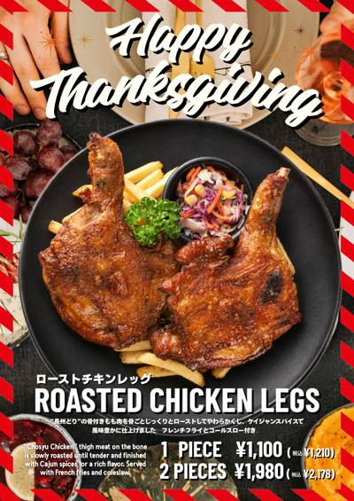
11/20 19:51 🗼 東京ワタミ株式会社のプレスリリース サンクスギビングを彩る、国産ブランド鶏 「長州どり」のローストチキンレッグが、国内全13店舗に登
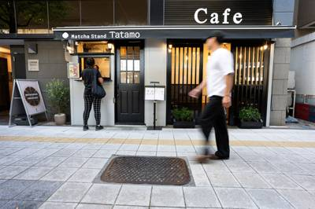
11/20 19:00 🗼 三軒茶屋株式会社Passのプレスリリース 三軒茶屋駅から徒歩5分。店舗デザインとブランドロゴを刷新し、2026年10月3日にリニューアル
株式会社ゴーゴーカレーグループのプレスリリース 注目のフードエリア「Dining World」に、ゴーゴーカレーが登場します！
一般社団法人 日本最適化栄養食協会のプレスリリース “最適化栄養食”が担う新たな「食のインフラ」としての役割に期待 多様な栄養課
株式会社フーディーのプレスリリース 「お茶のおいしい朝ごはん」をテーマに、旬の食材を使った14品の小鉢と、 全国各地から厳選した
日本光輝株式会社のプレスリリース 日本光輝株式会社（本社：東京都中央区、代表取締役社長：岡藤雄一郎）は、日本の伝統食文化を令和の
株式会社FTG Companyのプレスリリース やわらかく、ほろほろのプルドポークを使用。ほうれん草やブロッコリーなどの野菜もた
 11/20 15:00
🗼 東京
11/20 15:00
🗼 東京
カゴメ株式会社のプレスリリース 〜全国167件の応募の中から選ばれた学生5チームがプレゼン／カゴメなど22社が参画する「野菜摂取
ワタミ株式会社のプレスリリース WATAMI FAST CASUAL MANAGEMENT株式会社（本社：東京都大田区）が展開す
株式会社グライダーアソシエイツのプレスリリース 〜全国167件の応募の中から選ばれた学生5チームがプレゼン／カゴメなど22社が参
日本ミシュランタイヤ株式会社のプレスリリース ～焼鳥、精進料理、イタリア料理など、個性豊かなレストランが新たに登場～ 「すべてを
株式会社物語コーポレーションのプレスリリース 株式会社物語コーポレーション(本社:愛知県豊橋市/代表取締役社長:加藤 央之)が展
株式会社フォーシーズのプレスリリース 2026年11月20日（金）オープン カジュアル業態の外食事業を展開する株式会社FOUR
株式会社トランジットホールディングスのプレスリリース 和牛サーロインやロブスターにスパイスの香りと余韻を重ねた12月限定ディナー
株式会社ホテル小田急サザンタワーのプレスリリース 2027年4月より約半年間のリニューアル工事に入る「ラウンジ サウスコート」で
株式会社一家ホールディングスのプレスリリース 雲丹・キャビア・フォアグラ・黒毛和牛など豪華食材を使用した全8品のフルコース！ジャ
株式会社Light Houseのプレスリリース 食の企画会社Light House、独自の「製販分離」体制を活かしてブランドを本
株式会社一家ホールディングスのプレスリリース 2026年11月27日(金)～29日(日)の3日間、全店舗で数量限定販売 株式会
株式会社KISSUI GROUPのプレスリリース 「下町の食の提供」がテーマの「浅草もんじゃ ぜんや」が浅草エキミセに待望のオー
ゴディバ ジャパン株式会社のプレスリリース ～可愛らしいクマ形のチョコレートをトッピングした店舗限定メニューも～ ゴディバ ジャ
アイビーカンパニー株式会社のプレスリリース ※画像はイメージです アイビーカンパニー株式会社（本社：東京都渋谷区千駄ヶ谷／代表
株式会社KISSUI GROUPのプレスリリース 厚木の名前の由来がテーマの「月島もんじゃ 本厚木」が12/4(金)19:00に
 11/20 12:00
🗼 渋谷
11/20 12:00
🗼 渋谷
株式会社KISSUI GROUPのプレスリリース 古き良き建具が彩る空間で歴史ある大街道商店街に新たな風を吹かせる「もへじ松山」
株式会社マッシュホールディングスのプレスリリース 焼きりんごのジェラートを包んだアップルモカクレープと、豊かなコーヒーの風味を堪
株式会社オークラ ニッコー ホテルマネジメントのプレスリリース ローストビーフやおせち料理など、新年を寿ぐ華やかなメニューをご用
トヨタ自動車株式会社のプレスリリース ～2026年11月20日（金）より予約受付開始～ 東京・南青山にある「INTERSECT
カッパ・クリエイト株式会社のプレスリリース かっぱ寿司 イオン三ツ境店 ２０２７年１月２９日（金）オープン予定 コロワイドグル
 11/20 10:54
🗼 東京
11/20 10:54
🗼 東京
株式会社プロントコーポレーションのプレスリリース こだわりの珈琲を楽しむ、フルサービス型カフェ 【お詫びと訂正のお知らせ】 11
株式会社安達・グリーンワールドのプレスリリース 全室オーシャンビューの客室と温泉で楽しむ冬のご褒美旅。大山千枚田「棚田のあかり」
株式会社DDグループのプレスリリース “良い子”の仮面を脱ぐ王道じゃないクリスマス。血の乾杯で契約を交わし、雪降るリゾットや青い
RG株式会社のプレスリリース テレビ神奈川や神奈川新聞でも紹介された、新横浜のかき氷店「TSUKIMISOU」の味を「味彩 おん
ワタミ株式会社のプレスリリース 2026年11月22日（日）～11月29日（日）開催 ワタミ株式会社（本社：東京都大田区）が展
東京ガーデンパレスのプレスリリース 御茶ノ水駅より徒歩5分のホテル東京ガーデンパレス(所在地：東京都文京区、総支配人：鬼澤 幸充
株式会社船橋屋のプレスリリース いちご餡や抹茶羊羹でクリスマスカラーを表現。和菓子ならではの味わいを詰め込んだ冬の限定スイーツ
アトリエ株式会社のプレスリリース 北海道産小麦とかぼちゃなど、素材にこだわった手作りドーナツ。ふわっと軽い食感とやさしい甘さをお
SRSホールディングス株式会社のプレスリリース 「ジューシームネからあげオリジナルカップ」をオープンから2日間限定販売！ からあ
 11/21 08:00
🚄 福井
11/21 08:00
🚄 福井
とくさと-ふるさと納税還元率ランキング-のプレスリリース ふるさと納税還元率比較サイト【とくさと】 ふるさと納税返礼品の還元率を
学校法人 名城大学のプレスリリース 約800の企業・団体が出展した異業種交流会「メッセナゴヤ2026」でブースを開設 「メッセナ
株式会社丹友商事のプレスリリース 京都旅館「ホテル丹後」併設「割烹たんご」冬の天橋立の絶景とともに、心も体もほっこり温まるひとと
株式会社Formigaのプレスリリース ブラジルで代々受け継がれてきた家族の味。母の製菓技術と娘の商品開発力を掛け合わせ、11月
株式会社ＨＵＧＥのプレスリリース 前菜からメイン、パスタ、デザートまで。ご自宅で、レストランのコースのようなクリスマスディナーを
株式会社セブン‐イレブン・ジャパンのプレスリリース 株式会社セブン‐イレブン・ジャパン（本社：東京都千代田区、代表取締役社長：
尼崎市のプレスリリース 尼崎市は、令和元年度から、尼崎市内で生産された野菜に「あまやさい」という愛称をつけ、ＪＡや農家と連携し
CAMPARI JAPAN株式会社のプレスリリース カンパリのアジアチャンピオンを決めるカクテルコンペティション。6名のセミファ
株式会社ヒューマンフォーラムのプレスリリース 動物性食材を使わずに、安納芋の甘みをタルトとパフェの2品に仕立てた冬の季節限定スイ
信和ホールディングス株式会社のプレスリリース ランチタイムから仕事帰りまで。北新地で昼も夜も楽しめる、1日8セット限定の「Noë
ウッドデザインパーク株式会社のプレスリリース 手ぶらで楽しめる屋内グランピングBBQで、忘年会・新年会を。10名様以上の通常グル
株式会社Philocoffeaのプレスリリース 船橋から世界へ！2027年の世界大会に向けて意気込みを語る 「コーヒーの世界を幸
株式会社ツカダ・グローバルホールディングのプレスリリース 販売開始：2026年11月20日（金）～通年販売／販売店舗：ストリング
株式会社エブリーのプレスリリース 控えるのは一部の品目。買い控え中でも「値引き・特売があれば買う」が86.8% 株式会社エブリー
株式会社アウルコーポレーションのプレスリリース 夕日ヶ浦温泉に佇む、わずか六棟の大人の隠れ宿「もう一つの京都 雨情草庵」。客室す
大関株式会社のプレスリリース 大関株式会社（兵庫県西宮市、社長：長部訓子）は、2026年11月22日（日）に開催予定の首里城正殿
株式会社ピー・エス・コープのプレスリリース いちごの『メルティ』なショートケーキタルトで、ふたりだけの特別な時間を。 株式会社ピ
株式会社NSGホールディングスのプレスリリース ＮＳＧグループ 学校法人 国際総合学園 国際調理製菓専門学校（以下「本学」、新潟
株式会社丸千代山岡家のプレスリリース 株式会社丸千代山岡家が運営する「ラーメン山岡家」は、奈良県初出店となる「大和郡山店」を20
株式会社イートアンドホールディングスのプレスリリース 11月22日（日）より開催！Yahoo!ショッピング限定の人気TOP10詰
みのりみのるプロジェクトのプレスリリース ＪＡ全農は、直営飲食店舗「みのる食堂アミュプラザくまもと店」で１１月２３日（月・祝）
株式会社 大丸松坂屋百貨店のプレスリリース ●期間：11月25日 (水) →12月1日 (火) ●時間：10時～20時 ●場所：
全国農業協同組合連合会のプレスリリース ＪＡ全農がトルコで戦う卓球日本代表選手の皆さんを「ニッポンの食」で応援！ １１月２１日か
アイコニア・ホスピタリティ株式会社のプレスリリース ホテルエピナール那須（所在地：栃木県那須郡那須町、総支配人：濱木大治、以下
笛木醤油株式会社のプレスリリース 倒壊した同じ木桶仕込みのしょうゆ蔵の再建を応援！！義援金や珠洲市産大豆の仕込みも継続 笛木醤油
株式会社Ｂ＆Ｈのプレスリリース 2026年11月25日(水)～12月1日(火) 全メニュー小麦・白砂糖不使用のパティスリー「B
株式会社ロイヤルホテルのプレスリリース ［期間］2027年1月12日（火）～3月9日（火） 株式会社リーガロイヤルホテル広島（広
エイ・エイ・ピー・シー・ジャパン株式会社のプレスリリース 日本、大阪―スイスにルーツを持つスイスホテル南海大阪（所在地：大阪市中
株式会社たこ満のプレスリリース たこ満と掛川市の連携企画｜掛川抹茶を使用した限定スイーツ『茶々ランタン』を11月21日より3日間
株式会社グリーンハウスフーズのプレスリリース 株式会社グリーンハウスフーズが展開する「とんかつ新宿さぼてん」は、11月20日（金
株式会社ソワニエのプレスリリース 小麦粉、卵、砂糖、塩、バター。素材の風味にこだわり、定番をアップデートするクレープ 株式会社ソ
紀の川市のプレスリリース 紀の川市内高校生を対象に、地元企業を知っていただくためのバスツアーを開催します。 今年の見学先について
株式会社ＨＵＧＥのプレスリリース 飲めるフレンチトースト、選べるフィナンシェ、フォンダンショコラ。レストラン品質のスイーツを、特
日本生活協同組合連合会のプレスリリース ～店舗、宅配ともに前年超え～ 日本生活協同組合連合会（略称：日本生協連、代表理事会長：
株式会社 スタイルブレッドのプレスリリース ～2024年の日本食品衛生協会会長表彰に続き、令和8年度の全国87施設の一つに選定～
株式会社TOYO EVERYDAY HOLDINGSのプレスリリース 今夜のおかずがゲームセンターで取れる！？埼玉・行田＆桶川で
株式会社ニュー・オータニのプレスリリース 縁起の良い“福（ふぐ）”と、祝事の象徴“蟹”を惜しみなく使用した、特別な日のための極上
ストラク株式会社のプレスリリース SAIJI加盟訴求に関する株式会社ストラクからのお知らせです SAIJIシステムで全国数万か所
株式会社 大丸松坂屋百貨店のプレスリリース ■2026年11月25日(水)→12月1日(火) 大丸梅田店 地1階 西 出入口前
株式会社プラコレのプレスリリース 「PLACOLE & DRESSY」ブランドを展開する、冒険社プラコレ(本社：神奈川県
株式会社シュクレイのプレスリリース 公式オンラインストアで手に入る！人気5ブランドのパッケージをモチーフにしたトートバックセット
株式会社リカーマウンテンのプレスリリース 対象となる熊本県の焼酎の売上の一部を「令和8年熊本地震」災害義援金として寄付するチャリ
宝ホールディングス株式会社のプレスリリース ～ 日本食・SAKEとの出会いの場は日本食レストラン ～ 11月24日は、「いい（
株式会社ベルクのプレスリリース 「無かん水栽培」で良質な椎茸を生産し、自社店舗で販売を計画 株式会社ベルク（本社：埼玉県鶴ヶ島
一般社団法人日本AIスキル認定協会のプレスリリース AIスキル検定の知識が身に着くChatGPT無料プラグインをローンチ 完全無
株式会社アルファドライブのプレスリリース 日本一のまぐろ船団の素材と技術を持つ企業・土佐洋とともに、加工食品の商品開発に挑みまし
株式会社篤月のプレスリリース ―導入した新橋の焼肉店では、2か月で売上約170万円増― 中国SNSマーケティングを支援する株式会
株式会社カフェヨシノのプレスリリース カフェヨシノから生まれたベーカリー専門店が名駅地下街サンロードへ。限定の生ドーナツや、自慢
株式会社たかやまのプレスリリース 炭事業から始まったコーヒーブランド「でら珈園（DERA PARK COFFEE）」が新たにイン
吉野家HDグループ/株式会社シェアレストランのプレスリリース 式根島発の飲食ブランド「NINZ」二号店が所沢にオープン 株式会社
とくさと-ふるさと納税還元率ランキング-のプレスリリース ふるさと納税還元率比較サイト【とくさと】 ふるさと納税返礼品の還元率を
株式会社アトムのプレスリリース コロワイドグループの株式会社アトム（本社：神奈川県横浜市、代表取締役社長：植田剛史）が展開する回
株式会社ニュー･クイックのプレスリリース 地域で親しまれた「肉の上原」の想いをつなぐ“ハマのアメ横”に、あの味が帰ってくる！老舗
株式会社ゴンチャ ジャパンのプレスリリース 11月27日（金）T-FACE B館2Ｆ にオープンいたします 株式会社ゴンチャ
ハナマルキ株式会社のプレスリリース 〜「未来の伝統をつくる」を掲げ、「顔の見えるイノベーティブな企業サイト」を実現〜 味噌・醸造
キリンホールディングス株式会社のプレスリリース キリンホールディングス株式会社（社長 COO 南方健志、以下キリン）は、コーポ
株式会社ゴーゴーカレーグループのプレスリリース 毎日のお買い物に、金沢カレーの楽しみを。ゆめマート永犬丸の駐車場内に出店し、開店
株式会社ヒダカヤのプレスリリース ― 定番のおせちから寿司・オードブル・和牛まで。11月30日までは早期予約特典も ― おせち・
株式会社オーエムアイのプレスリリース 年末を前に和牛相場が最高値をつける中でも"日常の和牛"として支持を拡大
株式会社マルヤナギ小倉屋のプレスリリース 〜加東市をはじめ北播磨で約160 haへ拡大。官民農連携で進める特産品化と、安心・安全
有限会社 桐木神楽堂のプレスリリース 干支や松竹梅・鶴亀を上生菓子で表した、完全予約制のお正月用詰合せ 宮崎市の和菓子店「桐木
パルシステム生活協同組合連合会のプレスリリース 利用者と生産者の協同作業で果樹栽培の課題を共有 パルシステム生活協同組合連合会（
株式会社ファイブグループのプレスリリース アルコモール有楽街に、手仕込みの燻製居酒屋誕生。毎日朝7時まで営業！ 「”
株式会社ヒダカヤのプレスリリース ― 滋賀・竜王の直営牧場から。飼育から加工・販売まで手掛ける老舗の味わいを、冬の贈り物に ―育
株式会社FTG Companyのプレスリリース 大阪焼肉・ホルモン ふたご 綾瀬店が8周年を迎えます。2026年11月29日（日
しゃんらんのプレスリリース 但馬の厳選素材を使ったこだわりの中華をご家庭で！ 魔法の辣油（朝倉山椒入り） 麻婆豆腐の素（八鹿豚）
株式会社ホットパレットのプレスリリース ※画像はイメージです。 ペッパーランチを展開する株式会社ホットパレット（本社：東京都江東
株式会社サイバーエージェント マンガIP事業本部のプレスリリース ～食事中にスマートフォンを見る社会人は約7割、日々の食事と漫画
仙台ターミナルビル株式会社のプレスリリース 仙台ターミナルビル株式会社(本社：仙台市、代表取締役社長：松崎 哲士郎)が運営するエ
ヤマキ株式会社のプレスリリース ～かつお節削り体験とオンライン授業で、次世代に和食文化の魅力を伝える～ ヤマキ株式会社（本社：愛
東急ホテルズ＆リゾーツ株式会社のプレスリリース 詳細を見る 羽田エクセルホテル東急（東京都大田区、総支配人：岸井紀人）では、20
株式会社バーベキューアンドコーのプレスリリース 鯛の釜めしや明石タコを味わう元旦 ストーブ付き屋外席もご用意 11月20日から予
株式会社スティルアンのプレスリリース JR浜松駅から徒歩約5分のフレンチレストランで、12月12日（土）から提供。ディナーはキャ
株式会社レインズインターナショナルのプレスリリース 牛角アプリ会員限定。2026年11月25日（水）から12月10日（木）まで
富山フューチャー開発株式会社のプレスリリース 「マツコの知らない世界」（2023年3月）でも紹介された話題のお店が満を持してフュ
株式会社doubleのプレスリリース 〜「もう一杯いくやろ？」「次いつ集まる？」など、思わずクスッと笑える関西弁のメッセージで、
株式会社Eau et selのプレスリリース 社員に喜びを届ける「社長のお誕生日フルコース」。社長のメッセージカードを添えて、1
 11/20 08:00
🚄 茨城
11/20 08:00
🚄 茨城
とくさと-ふるさと納税還元率ランキング-のプレスリリース ふるさと納税還元率比較サイト【とくさと】 ふるさと納税返礼品の還元率を
 11/20 08:00
❓ 不明
11/20 08:00
❓ 不明
ReportPrime（レポートプライム）のプレスリリース 2025年は約72億米ドル、CAGR約24％を予測し、Roboroc
 11/20 08:00
🚄 新潟
11/20 08:00
🚄 新潟
とくさと-ふるさと納税還元率ランキング-のプレスリリース ふるさと納税還元率比較サイト【とくさと】 ふるさと納税返礼品の還元率を
 11/20 12:00
🗼 東京
11/20 12:00
🗼 東京
株式会社ファミリーマートのプレスリリース 株式会社ファミリーマート（本社：東京都港区、代表取締役社長：小谷建夫）は、2026年9
ブラウンフォーマンジャパン株式会社のプレスリリース 2026年11月22日（日）までHouse of OMOTESANDO（東京
GYRO HOLDINGS 株式会社のプレスリリース オープン記念として、11/21（土）・11/22（日）2日間限定で各日先着
株式会社オオサカムセンデンキのプレスリリース 最初に感じる豊かな塩味と、あとからほどける甘さ。通常800円（税込）のところ、オン
東神開発株式会社のプレスリリース 福岡の人気シュトーレン×博多リバレインモール内飲食店のコラボメニューを発売。コラボメニューに使
株式会社主婦と生活社のプレスリリース 『情熱大陸（MBS/TBS系）』出演で話題の著者！ 自宅で再現できる本格レシピ掲載 株式会
株式会社あしびかんぱにーのプレスリリース 沖縄土産「Shisa Cookie（シーサークッキー）」を展開する株式会社あしびかんぱ
株式会社八天堂のプレスリリース 期間：2026年11月27日（金）～12月25日（金）※火・水曜定休 株式会社八天堂（本社：広島
ビーテック株式会社が運営するオリジナル食品ノベルティの通販サイト「ノベルティのお菓子屋さん」は、年末年始のごあいさつやイベントの
株式会社 喜代村のプレスリリース 香港・尖沙咀（Tsim Sha Tsui）に新店舗「壽司三昧（すしざんまい）香港本店」開店のご
一般財団法人JR東日本文化創造財団のプレスリリース ※画像はイメージです。 Photo: Kimiko Kaburaki Mo
株式会社ホテルマネージメントジャパンのプレスリリース 【2026年12月31日（木）限定開催】 【2026年11月20日】ヒルト
野村不動産ホールディングス株式会社のプレスリリース ―貸切利用・季節に合わせた特別なクルージングを提供予定― 野村不動産株式会
合同会社スモールラボのプレスリリース 木場公園で元気に遊ぶスポーツ体験と、子どもたちが夢中になる多彩なワークショップ＆あたたかい
パナソニック株式会社のプレスリリース 参加無料・予約不要！指定条件を満たした方に「野菜生活100 Smoothie アサイー＆バ
株式会社beagleのプレスリリース ロンドンの名門リスニングバー「Brilliant Corners」ゆかりのトップセレクター
株式会社ＳＨＫラインのプレスリリース 横須賀支店長VS新門司支店長「海鮮派？無限派？」船内レストランで究極の麺対決を開催 東京九
Anique株式会社のプレスリリース オリジナルグッズ2,200円（税込）ご購入ごとに、アミューズメントゲームで使える「スペシャ
株式会社横浜岡田屋のプレスリリース レシート応募でお買物・お食事券が当たるプレゼントキャンペーンや、館内回遊企画など、クリスマス
株式会社プレナスのプレスリリース 12 月20日（日）東京・中央区立城東小学校で無料開催 株式会社プレナス（本社：中央区銀座、
株式会社大庄のプレスリリース 蒲田の酒好きに朗報です。 JR・東急線蒲田駅西口すぐ、飲食店が軒を連ねる「くいだおれ横丁」と「バー
株式会社太陽社のプレスリリース ～大会ロゴ入りの限定米粉バウムクーヘンと、特製の掛け紙をかけた千葉銘菓の詰め合わせを販売～ お菓
 11/21 08:00
🚄 京都
11/21 08:00
🚄 京都
ドリームフーズ株式会社のプレスリリース ― 日頃のご愛顧に感謝を込めて、1日限定で近江ちゃんぽん無料引換券を進呈 ― 「近江のち
カネテツデリカフーズ株式会社のプレスリリース 来場者数前年比約30％増！「野菜フライ」無料配布や「ほぼタコ焼き」、工場見学など、
東京商工会議所のプレスリリース 【事業案内】キーワード：渋沢栄一、物産展、宮城ふるさとプラザ、 埼玉県深谷市、にしき
株式会社REJECTのプレスリリース 『ALGS Year 6 Championship』（2027年1月・札幌）に向けて、gr
アイコニア・ホスピタリティ株式会社のプレスリリース アートホテル日暮里 ラングウッド（所在地：東京都荒川区、総支配人：塩田祥之
阪急阪神不動産株式会社のプレスリリース ～大切な人、同僚・仲間と何度来ても楽しめる食とカルチャーが集う特別な1ヵ月～ タイムアウ
阪急阪神不動産株式会社のプレスリリース ～大切な人、同僚・仲間と何度来ても楽しめる 食とカルチャーが集う特別な1ヵ月～ タイムア
株式会社コスモス食品のプレスリリース さらにWEB限定「ぬくもりミニギフト」が特別価格1,001円に！お好みの味を詰め合わせるオ
西原町商工会のプレスリリース 食品・農産物からリラクゼーション、「さわりん」グッズまで。ステージでは、大道芸、フラダンス、吹奏楽
学校法人近畿大学のプレスリリース 進呈する2種類のミニジェラート（左）と布目ダム浚渫土を用いて育てているブルーベリー（右） 近畿
味の素株式会社のプレスリリース ～アルムナイとの対話を重ね、退職後も続く関係を育む取り組みが評価～ 味の素株式会社（社長：中村
株式会社ココトモファームのプレスリリース ～11月28日（土）、姉妹都市・愛知県犬山市の田んぼのお米から作る米粉バウムクーヘンを
東海テレビ放送株式会社のプレスリリース 手土産に１缶お持ち帰り＆PRONTO鶴舞公園店コラボ！来場者にお得なキャンペーン発表 千
真岡市のプレスリリース LINEのお友だち登録で誰でもチャレンジ！真岡産いちごの試食やいちごジャムがもらえるほか、イベント限定「
スターツ出版株式会社のプレスリリース 最大の難所は「日程調整」と「会場探し」。調査で見えた幹事の悩みに応える『幹事パーフェクトガ
株式会社くるめしのプレスリリース ～受賞作の「銀鮭海苔弁」をはじめ、石川県直送の完全無農薬オーガニック「熟成もっちり玄米」を使っ
株式会社テンポスホールディングスのプレスリリース 12月11日（金）にメディア内覧会を開催。試食・撮影のほか、代表取締役への個別
株式会社Yagishのプレスリリース 290万人のオンライン会員サービスで培ってきたノウハウで、業界初の会員制カフェにチャレンジ
レッドブル・ジャパン株式会社のプレスリリース 日本時間の11月30日（月）午前、カナダ・トロントで開催！ エナジードリンク・ブラ
株式会社 フォワード・クリエイションのプレスリリース 2026年12月18日から12月25日まで。ランチ4,950円、ディナー1
西本Wismettacホールディングス株式会社のプレスリリース 世界のショコラブランドが彩るクリスマス 扉を開けるたびに楽しめる
株式会社村の駅のプレスリリース 伊豆・村の駅ラスカ熱海店(株式会社村の駅 所在地：静岡県熱海市田原本町11-1 ラスカ熱海1階)
株式会社 大丸松坂屋百貨店のプレスリリース 松坂屋静岡店 本館地階ウィークリーグルメ 2026年11月25日(水)→12月1日(
株式会社オークラ ニッコー ホテルマネジメントのプレスリリース チョコレートを使用した個性あふれるスイーツが登場 『バレンタイン
株式会社 ジャパネットホールディングスのプレスリリース 〜約20万球の光のゲート、表情を変える3つの週末マーケット、名曲と連動す
Sustainable Food Asia株式会社のプレスリリース 運営サポートやケータリング手配付きの「貸切プラン」と、課題に
サーラ不動産株式会社のプレスリリース 愛知県豊橋市にて、「柿が赤くなると医者が青くなる」旬の健康食材・柿について学び、味わい、買
 11/20 11:00
🚄 熊本
11/20 11:00
🚄 熊本
株式会社JFLAホールディングスのプレスリリース 「アミュプラザくまもと」に 11/24（火）～ 11/30（月） 出店します！
ワタミ株式会社のプレスリリース WATAMI FAST CASUAL MANAGEMENT株式会社（本社：東京都大田区）が展開す
株式会社 大丸松坂屋百貨店のプレスリリース ■11月25日(水)→12月1日(火) ■地階食品フロア「ごちそうパラダイス」 毎日
特定非営利活動法人TABLE FOR TWO Internationalのプレスリリース 日産セレナ、オイシックス、青稜中学・高
ケンミン食品株式会社のプレスリリース ～GF RAMEN LABピンバッジ交換や万博レガシースタンプ、ケンミン焼ビーフンガチャガ
カルチュア・コンビニエンス・クラブ株式会社のプレスリリース 個性豊かな19ブランドのクッキーが集結。自分へのご褒美や、大切な方へ
株式会社スイーツビレッジのプレスリリース 株式会社スイーツビレッジ（本社:愛媛県松山市、代表取締役 本山智男、以下：スイーツビレ
株式会社マッケンジーハウスのプレスリリース マッケンジーハウス、湘南ベルマーレフットサル・籔内涼也選手との縁からオリジナルウォー
株式会社江戸一のプレスリリース 11月20日（金）～あわび、サザエ、和牛など厳選した高級食材が食べ放題の最上級「匠コース」新登場
アイコニア・ホスピタリティ株式会社のプレスリリース 霧島国際ホテル（所在地：鹿児島県霧島市、総支配人：林田博）は、2026年1
ファーストキッチン株式会社のプレスリリース 11月20日（金）から 世界一に輝いた“恵比寿BLACOWS”と共同開発のバーガーを
二階堂酒造有限会社のプレスリリース 2026年12月1日（火）-12月27日（日）/大阪・心斎橋PARCO B2Fにて開催 二階
株式会社シトラムのプレスリリース 〜新たな顧客接点の創出に向け、12月19日（土）にシークレットイベント「Vol.1」を開催〜
株式会社さすがやのプレスリリース ～金・プラチナが店頭買取相場から最大30％UP！ 金券は額面100％買取保証～ 買取専門店を
株式会社NEXER Groupのプレスリリース 株式会社NEXER Group・ごまの産地・品質・安全性に関する調査 ■ごまの「
株式会社クリエイティブアルファのプレスリリース 〜トリュフ香る「赤と白のプレミアム」からデザートピザまで、冷凍庫のストックひとつ
LivelyLifeライブリーライフ株式会社のプレスリリース AI顔自動追尾を搭載し、ひとり撮影にも対応。最大8000万画素の写
ANGEL JAPAN株式会社のプレスリリース ～ブランド初となるエナメル素材のTrunk(トランク)を採用した「HALO Ne
YOSHIKI PR事務局のプレスリリース 1本77,000円のバーボン樽熟成シングルカスク、ブレンデッドウイスキーはわずか7分
奥の松酒造株式会社のプレスリリース 純米大吟醸雫酒金之丞／純米の部「最優秀賞」および、大吟醸雫酒十八代伊兵衛／吟醸の部「優等賞」
株式会社アスマークのプレスリリース 発泡酒・新ジャンルの買い方の変化は、「ビールへの切替」が3割弱で最多 マーケティングリサーチ
青木酒造株式会社のプレスリリース 1717年創業の青木酒造株式会社（本社：新潟県南魚沼市、代表取締役：青木 貴史）は10月30日
リードオフジャパン株式会社のプレスリリース 1926年メキシコ生まれの伝統と誇りを、一滴に。オレンダイン家が100年守り続けてき
株式会社モーリのプレスリリース 新作パスタや国産牛ステーキ、紅ズワイガニのクリームパスタも登場。季節限定のケーキやスイーツも充実
株式会社ロイヤルマイルのプレスリリース 3,500円・5,000円・7,700円の3プランを徹底紹介！定番から長期熟成、個性派ラ
株式会社ウイスキー文化研究所のプレスリリース 株式会社ウイスキー文化研究所（代表：土屋守）は、日本各地を旅するように全国の蒸留所
日本酒造組合中央会のプレスリリース 全国約1,600の酒類メーカー(日本酒、本格焼酎・泡盛、本みりん)が加盟する、日本酒業界最大
株式会社浜友Ｅ.Ｆ.のプレスリリース ～東京コミコン10周年を記念した限定豆樽を会場限定販売。来日セレブの直筆サイン入りフォトな
一般社団法人鎌倉さかなの協同販売所のプレスリリース 国産天然魚にこだわる「サカナヤマルカマ」の魚料理に、自然派ワイン専門店「鈴木
ニッカホーム株式会社のプレスリリース ニッカホームが再生に取り組む「Nikka Park 岩屋堂」にBBQ施設「蛍 HOTARU
株式会社ロイヤルマイルのプレスリリース 今はそれぞれ異なるバーで活躍する4名が、再び同じカウンターへ！2026年11月24日(火
公益社団法人 新潟県観光協会のプレスリリース 新潟市 古町で「のっぺ」の講座、食材探し、そして調理と食べ比べ・ペアリングまで。お
株式会社JR東日本商事のプレスリリース ～「JAL de はこビュン」を活用して搾りたての新酒をシンガポールにお届け～ 〇東日本
ホワイティうめだ(大阪地下街株式会社)のプレスリリース 大阪地下街株式会社(本社：大阪市中央区、代表取締役社長：大矢 雅士)が運
株式会社ロイヤルマイルのプレスリリース 今はそれぞれ異なるバーで活躍する4名が、再び同じカウンターへ！2026年11月24日(火
株式会社物語コーポレーションのプレスリリース 株式会社物語コーポレーション(本社:愛知県豊橋市/代表取締役社長:加藤 央之)が全
株式会社ロイヤルホテルのプレスリリース 販売期間：2027年1月1日（金・祝）～ 2月27日（土） ※無くなり次第販売を終了いた
株式会社エスエルディーのプレスリリース 乾杯のシャンパンから始まり、削りたてのハム、白桃とホタテのマリアージュ、そして真鯛と牛フ
株式会社 旭川ワイナリーのプレスリリース 醸造家 高橋克幸、初醸造ワインをリリースいたします。 Chapitre deuxiem
株式会社アップライジングのプレスリリース 期間中は商品ポイント3倍！条件達成で最大1,500円OFFクーポンも。山崎12年・白州
株式会社コズミックホールディングスのプレスリリース ～三宮駅すぐにオープンする当店では、お手頃価格で本格鉄板料理を楽しめます。オ
株式会社 弥栄酒造のプレスリリース 創業161年、造る酒はひとつ。お正月の乾杯やお年賀に向け、名入れ彫刻は12月15日まで受付。
 11/20 13:00
🚄 愛知
11/20 13:00
🚄 愛知
株式会社JFLAホールディングスのプレスリリース 株式会社JFLA ホールディングス（本社：東京都中央区／代表取締役社長：檜垣
ヨーテイブルーイング株式会社のプレスリリース ペナントのロゴと缶のパッケージを、山の思い出を語り合うきっかけに Mountain
株式会社パソナグループのプレスリリース 淡路島で循環型農業に取り組む、株式会社Awaji Nature Farmが運営する『陽・
音源: Coming Up Roses – Harry Styles
“I feel like I haven’t done much this year…” and then the receipts roll in. Creators open with that line, then fire off quick clips labeled by month to prove otherwise. It’s a feel-good year-in-review that works for any niche, and a great gut-check for anyone doing the December doom-scroll.
音源: Last Christmas (Instrumental) – Wham!
The classic holiday wishlist, but make it personal. Start with “Dear Santa, I’m a size…” and finish it with whatever you actually want under the tree: a beauty treatment, a vacation, your fave product. Brands, this one’s giving free gift guide.
音源: Original audio
Fall down? Get up, diva. This one’s a little pep talk for the haters’ ears: shake off the setback, dust off the crown, and keep doing you. Dramatic, empowering, and a good fit for any creator or brand with a comeback story (or a few messy attempts) to show for it.